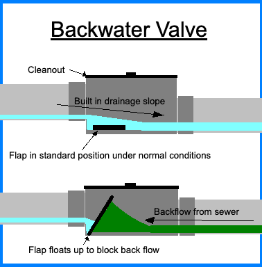
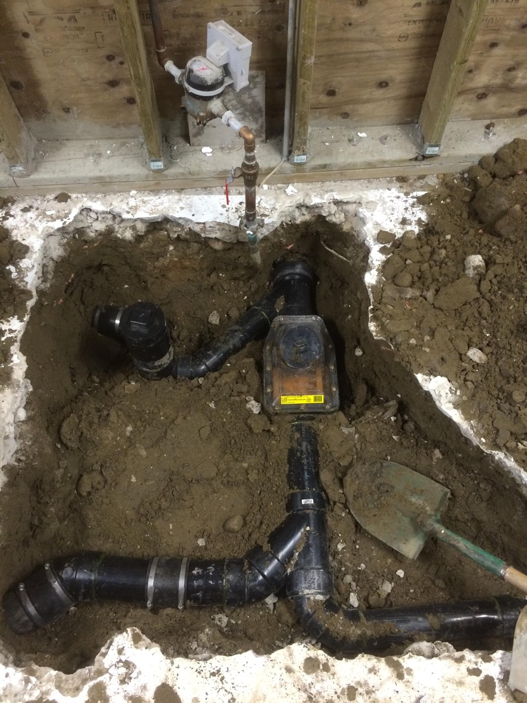

Edmonton
Backwater
Valve
Are you located in Edmonton, with a home built before 1989?
Is your home in a neighbourhood prone to flooding?
Have you experienced sewer backups yourself?
Is your home separately serviced? (Single family home or Duplex)
You may be eligible for up to $800 in rebates!
What is a Backwater Valve?
Do you have a backwater valve?
A backwater valve is a device that prevents sewer water from coming into your home.
When the city sewer is full, due to rain or heavy use, the sewer drain attached to your home may become full of communal sewer water, and without a backwater valve, may even back up into your home.
Homes built after 1989 are required to have a backwater valve, so if your home is newer than that, chances are very good you do have one.
If your home is older and you do not have one currently installed in your home you may be eligible for up to $800 in rebates if you make the decision to have one installed in your home!

Subsidy conditions:
-
You are required to pay for the backwater valve in full then submit the application for the subsidy to be reimbursed.
-
The subsidy, up to $800, will be paid FROM EPCOR/THE CITY OF EDMONTON to the homeowner.
-
There are no guarantees to receive a subsidy.
What to Expect During Install:
The following is an example of a very basic install.

Installer will remove the concrete above your main sewer.

Installer will cut away a part of your sewer.

Installer will install the backwater valve.
Please note, your install may also look more intense, like this:

Always refer to what your journeman and inspector are saying.